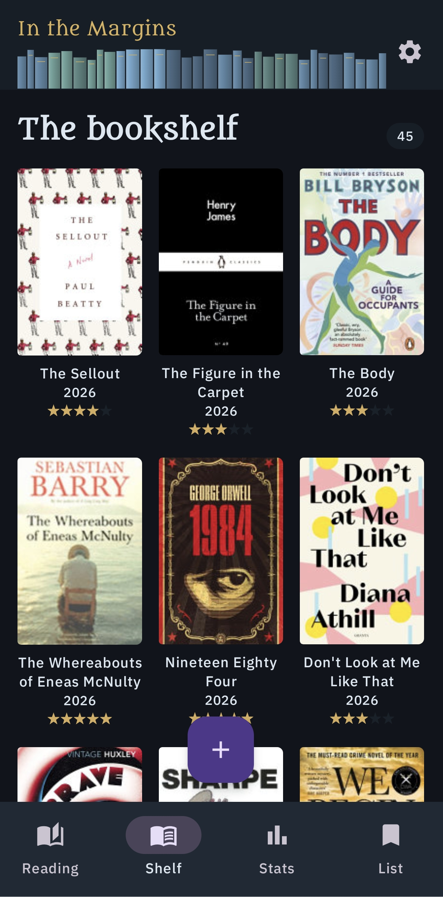
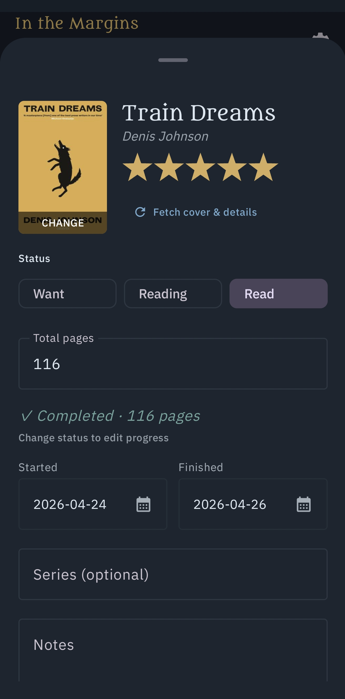
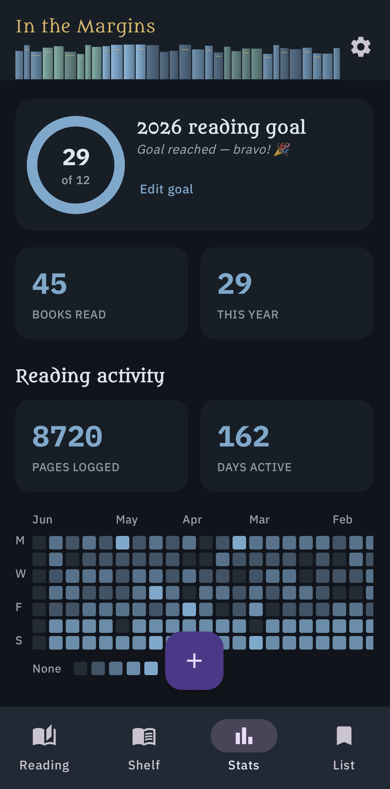

Margins is a book logging app for people who want to record their reading, without the social network attached.
A look at the library, book detail, and stats views.



Add a book and log progress in a couple of taps — no forms to fight with.
Attach notes and quotes.
See pace, streaks, and yearly totals without a dashboard you have to configure.
Export your library any time as a JSON, no proprietary formats.
Found a bug, or want a feature? Leave a comment below.